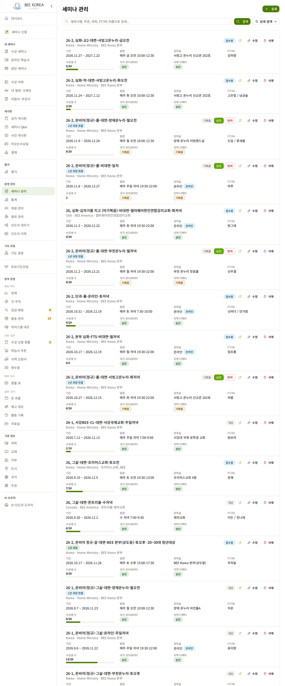
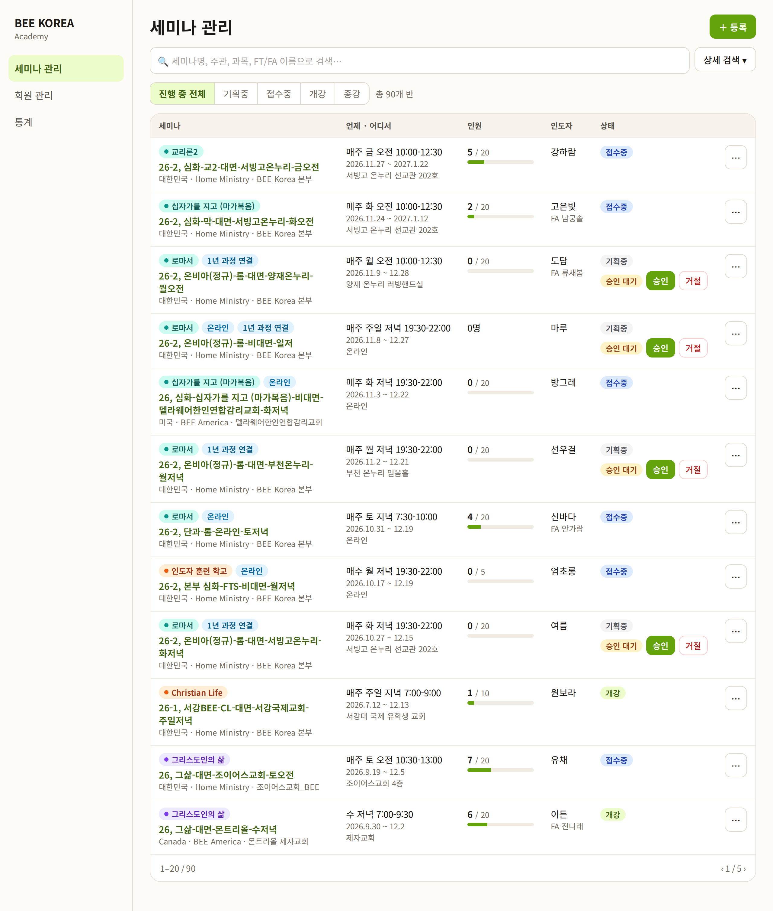
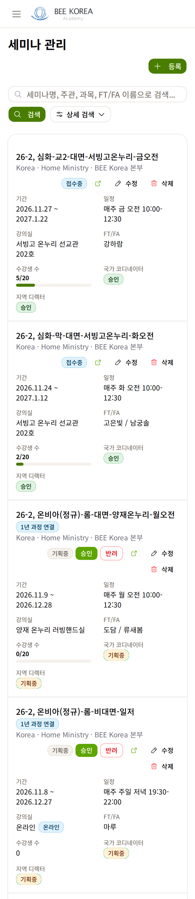
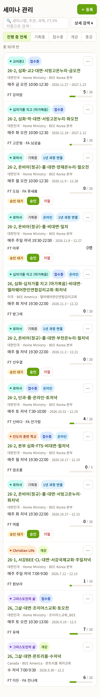
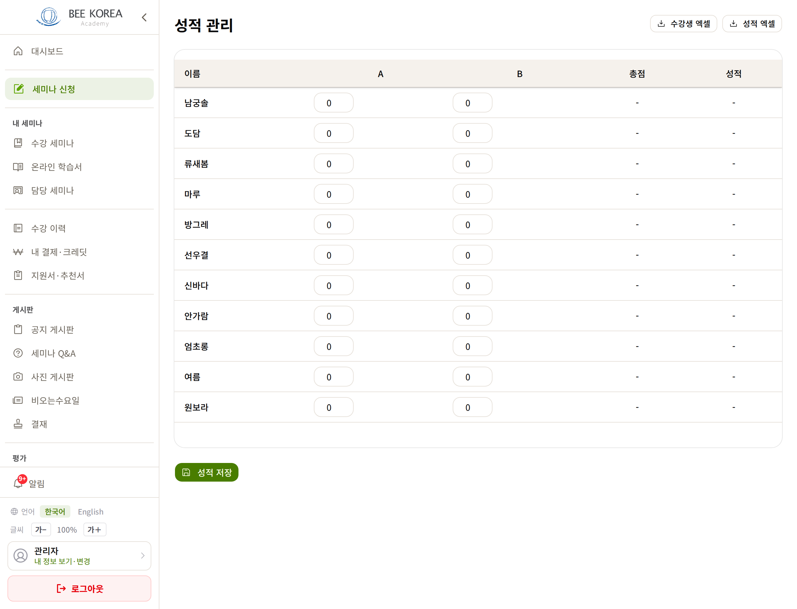
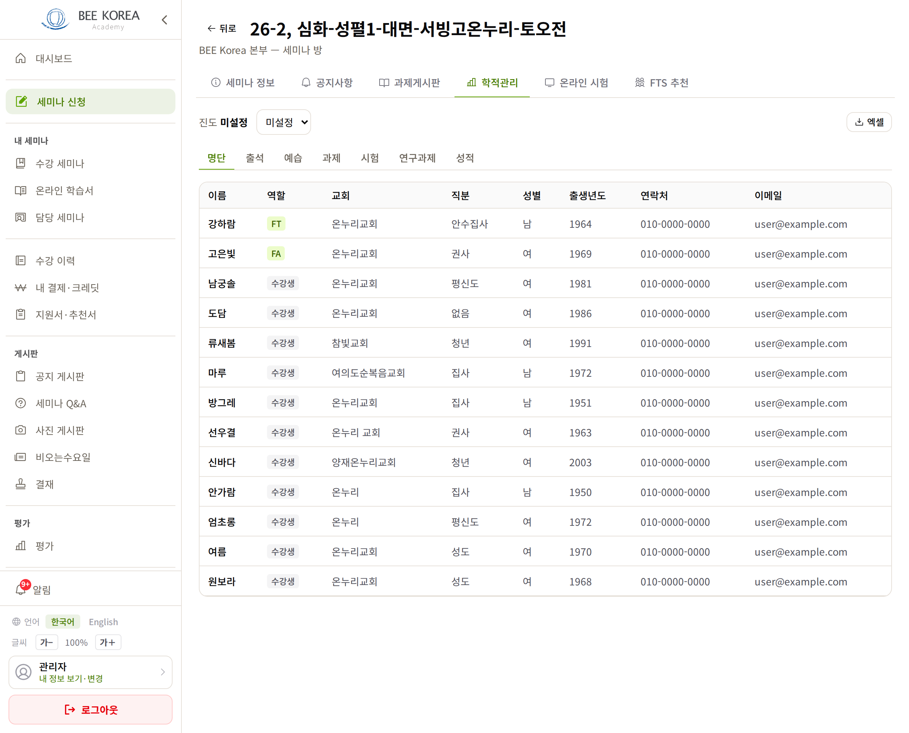

LMS 세미나 관리 목록 · 성적 화면 — 시안 1차
2026-10-11 · 반 정보는 운영 1쪽 실제 값, 인도자·학생 이름과 연락처는 모두 가짜 · 아직 적용 전
① 세미나 관리 목록 — 무엇이 바뀌나
- 카드 → 표 — 반 하나가 지금은 약 180px라 한 쪽(20개 반)이 4,100px입니다. 표 한 줄(약 90px)로 줄여 한 화면에 두 배쯤 보입니다. 휴대폰은 짧은 카드로 바꿉니다
- 칸을 사람이 찾는 순서대로 — 세미나(과목 칩·이름·나라·지부·주관) · 언제·어디서(시간·기간·강의실) · 인원 막대 · 인도자 · 상태
- 승인은 필요할 때만 — 지금은 모든 줄에 「국가 코디네이터 승인」·「지역 디렉터 승인」 칩이 붙어 있습니다(20줄 중 15줄이 둘 다 「승인」). 승인이 아직 안 된 반에만 「승인 대기」 + [승인]·[거절]을 보이고, 나머지는 비웁니다
- 상태 빠른 고르기 — 「진행 중 전체 · 기획중 · 접수중 · 개강 · 종강」을 위에 두어 한 번에 거릅니다(지금은 「상세 검색」을 열어야 합니다)
- 줄마다 붙은 [삭제]를 「⋯」 안으로 — 지금은 20줄 모두 [수정]·[삭제]가 나란히 있습니다. [수정]은 줄을 누르는 것과 같은 곳으로 가서 뺍니다. 「⋯」 안에는 [세미나 방 새 창]·[삭제]를 둡니다
- 나라 이름을 한국어로 — 「Korea」 → 「대한민국」(상세 화면과 같은 기준)
PC


휴대폰


② 성적 화면 — 고칠 화면이 아니라 고장 난 중복 화면이었습니다
성적이 보이는 화면이 두 개입니다.
- 옛 「성적 관리」(
/seminars/[id]/records, 학생용 세미나 상세의 「성적」 버튼으로 들어감) — 칸 이름이 「A」「B」뿐이라 무엇인지 알 수 없고, 그 값은 사실 출석·예습 횟수를 센 값이라 고쳐 넣을 수 없습니다. [성적 저장]을 누르면 서버 오류가 납니다(없는 칸에 쓰려고 함). 학생이 열면 권한이 없어 빈 표만 보입니다 - 세미나 방 「학적관리」 탭 — 실제로 쓰는 화면입니다. 명단·출석·예습·과제·시험·연구과제·성적을 여기서 넣습니다


✅ 확정(태남 「성적 관리 페이지가 필요한가? 지금 세미나 방에서 모두 처리 하는데」): 옛 화면을 없애고, 그 주소로 들어오면 세미나 방 「학적관리」 탭으로 보냅니다. 「성적」 버튼도 그쪽으로 잇습니다. 학생은 학적관리 탭에서 자기 성적만 봅니다(지금도 그렇게 되어 있습니다).
정해 주실 것
- 목록을 표로 바꿔도 될까요? (휴대폰은 카드)
- 승인 칩을 「승인 대기」일 때만 보여도 될까요? 국가 코디네이터·지역 디렉터 중 누가 남았는지는 줄을 열면 보입니다.
- 「레코드가 보이는 화면」이 세미나 방 「학적관리」 탭을 말씀하신 거라면, 그 화면 시안은 목록 다음에 따로 만들겠습니다(탭 7개짜리 큰 화면이라 하나씩).